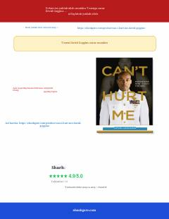

CHAqliy mustahkamlik va o'z imkoniyatlarini ro'yobga chiqarish bo'yicha kuchli motivatsion qo'llanma.
Devid Goggins o'zining og'ir bolaligi va qiyinchiliklarini yengib o'tib, qanday qilib dunyodagi eng qattiqqo'l sportchilardan biriga aylanganini hikoya qiladi. Kitob o'quvchilarga o'z imkoniyatlarining chegarasidan chiqish va mentalitetni o'zgartirish bo'yicha amaliy saboqlar beradi.